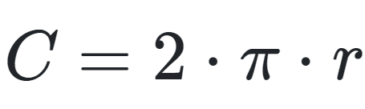
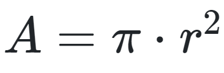
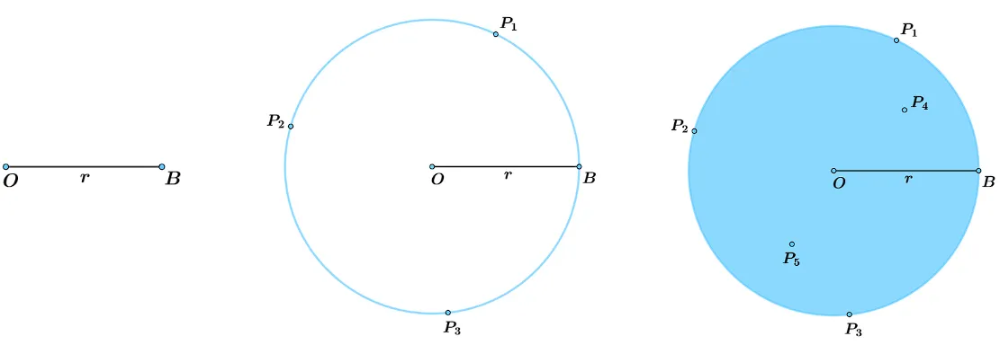

Círculo
O círculo é o conjunto de todos os pontos cuja distância de cada um até o centro da figura possui uma medida igual ou menor que o raio dela.
Os principais elementos do círculo são o centro e o raio.
O perímetro de um círculo de raio r é calculado por:

A área de um círculo de raio r é dada por:

O círculo pode ser definido a partir de uma circunferência de mesmo centro e raio e por todos os pontos que estão no interior dela.
